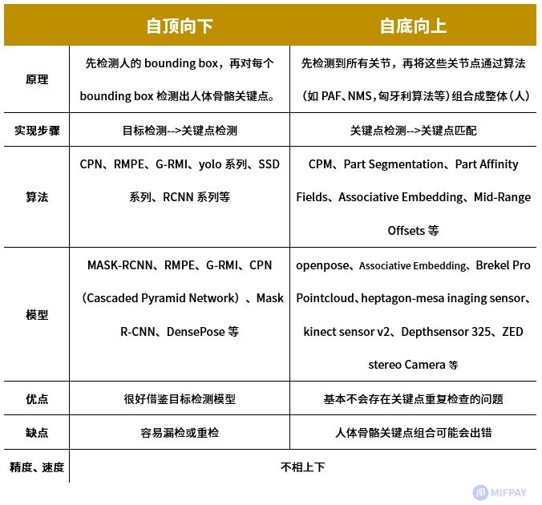
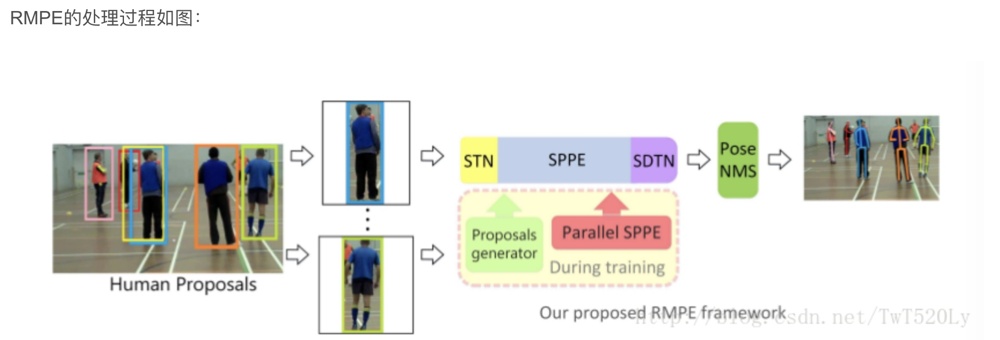
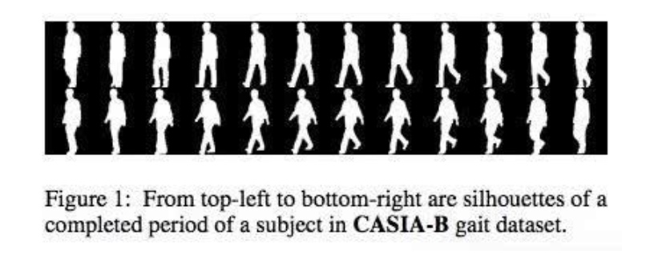

参考资料:
- https://zhuanlan.zhihu.com/p/69042249
- https://mp.weixin.qq.com/s?__biz=MzU5MzQyMzk5OQ==&mid=2247484885&idx=1&sn=09aaafd71959a9c0db703993f8386bd5&chksm=fe11fec5c96677d3580e5f9ee7c9c4c5f4c31257442625afa5ae59e2f2954940e3c3a50acc33&mpshare=1&scene=1&srcid=#rd
1. 相关数据集
| 数据 | 基本情况 | 链接 |
|---|---|---|
| MPII | 2.5W images， 410 activities | http://human-pose.mpi-inf.mpg.de/#results |
- LSP(Leeds Sports Pose)
是一个体育姿势数据集，其被分为竞技、羽毛球、棒球、体操、跑酷、足球、排球和网球几类，共包含约 2000 个姿势注释，图像均来自于 Flickr 的运动人员。
-MPII
-MSCOCO
多人
2.关键点检测
从检测方法上看，pose estimation主要分两大类: 1) 自顶向下(先检测出人再检测关键点) 2）自下向上(先检测出关键点，然后匹配出人)
从检测的范围来分的话，主要包括:2d, 2d+和3d

自顶向下
1.RMPE-alphapose
Regional Multi-Person Pose Estimation. 先检测人的bounding box就会出现框不准，以及框冗余的问题。而这篇论文的目的就是解决这个:
We aim to detect accurate human poses even when given inaccurate bounding boxes

开源工具: https://github.com/MVIG-SJTU/AlphaPose
- CPN（Cascaded Pyramid Network）
- RMPE
- G-RMI
** 自底向上**
2.
论文 Realtime Multi-Person 2D Pose Estimation using Part Affinity Fields
Part Affinity Fields - openpose
openpose
以CPM（卷积pose Machine）为基础。
CPM
3. 2D+检测
DensePose
3D检测
步态识别
步态识别的数据一般是黑白轮廓图

常见的方法有:
（1）将步态看做图像: GEI、CGI、VTM、ViDP
（2）将步态看做连续的时序: LSTM, 3D-CNN
总结：https://zhuanlan.zhihu.com/p/102457223
人体关键点检测按照是否包含3维深度信息可以分为2D和3D检测

openpose
以CPM（卷积pose Machine）为基础。CPM（top-down）
详细介绍：https://zhuanlan.zhihu.com/p/102468356denspose